The Roman Fort: 752 Men, No Beer, One Birthday
Roman FortVindolandaVindolanda TabletsRoman Fort LayoutInside a Roman FortHadrian's Wall
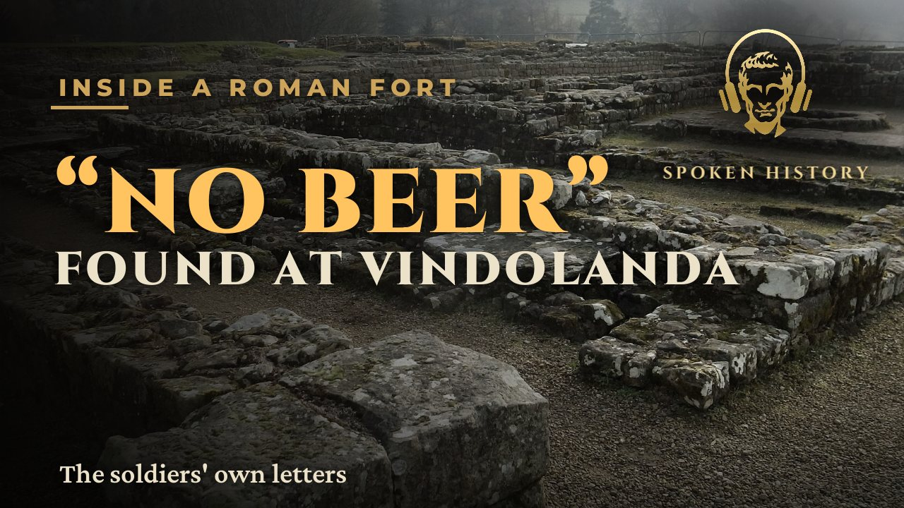
Northern England. March 1973. In a deep trench, the archaeologist Robin Birley is handed two thin slivers of dark wood. He said later that they looked rather like oily plane shavings. They are prised apart. On the inside, there is writing. And as the air reaches it, the ink begins to fade. An infra-red photograph brought the words back. It was part of a letter. Pairs of socks. Two pairs of sandals. And two pairs of underpants.
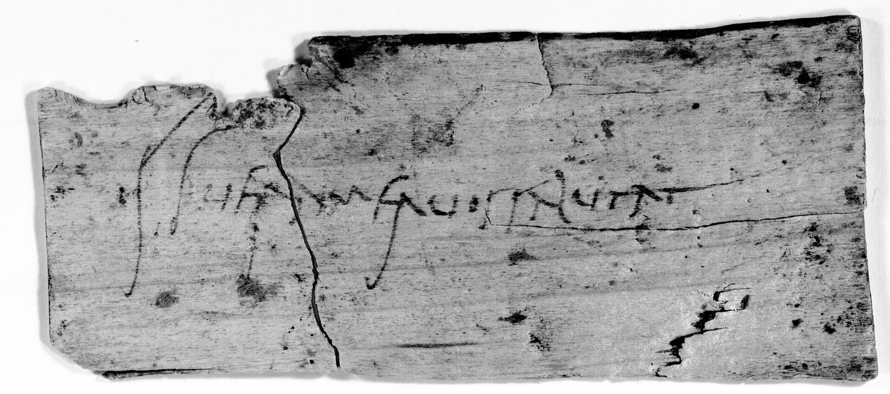
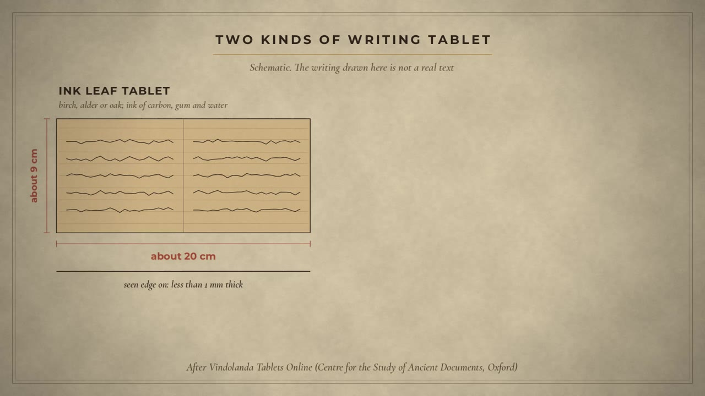
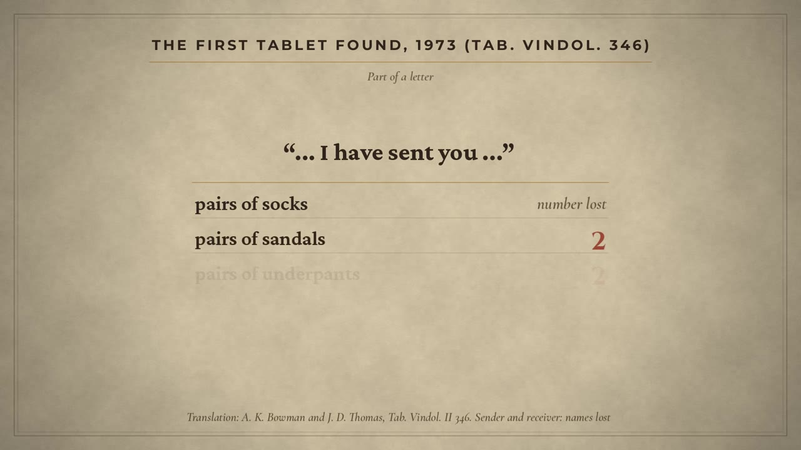
Did you know? The very first Vindolanda tablet found, in March 1973, is part of a letter about pairs of socks, two pairs of sandals and two pairs of underpants (Tab. Vindol. II 346).
This is Vindolanda, a Roman fort just south of Hadrian's Wall. Those slivers were the first of the Vindolanda tablets: letters, lists and reports, written by people who lived here about 1,900 years ago. Today we're asking what a Roman fort was, what has been dug up here, and what the texts really say. Because the fort in the textbooks and the fort in the ground are not quite the same thing.
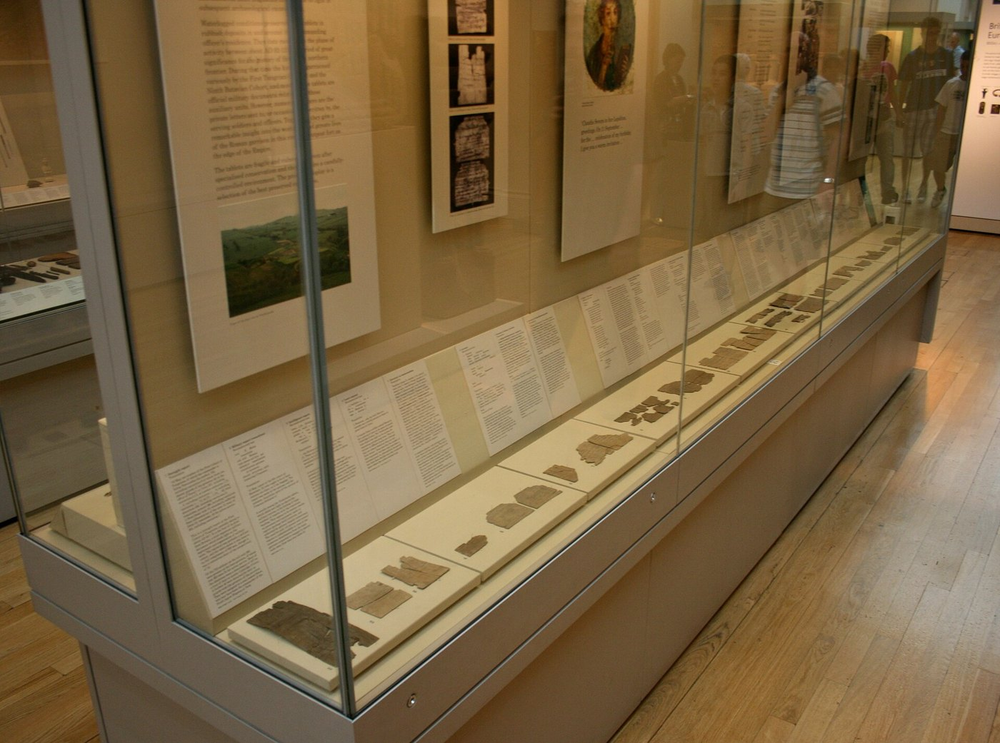
Camp or fort?
First, a fort is not a camp. The Greek historian Polybius, writing in the second century B.C., describes a Roman army camp. It forms a square, he says, and its streets give it the appearance of a town. Josephus, in the first century A.D., says a Roman camp looked like a city built on the sudden, with workshops, and the general's tent in the middle, like a temple. Those were camps for an army on the move. A fort was a long-term base: at Vindolanda, first of timber, later of stone.
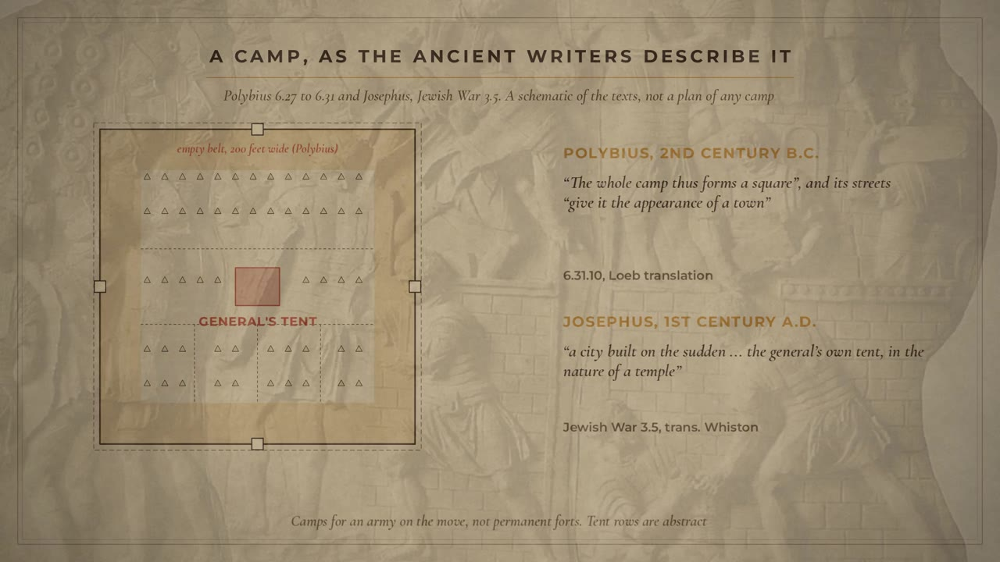
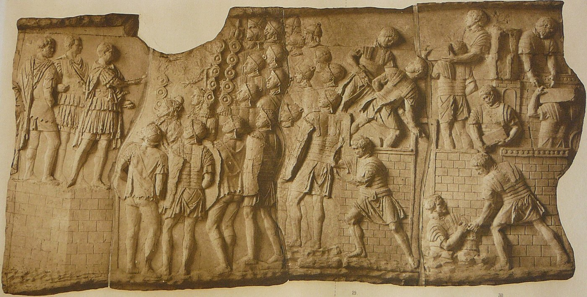
Where is Vindolanda?
Vindolanda lies on the Stanegate, a Roman road across the north of England, about 1.6 kilometres south of the line of Hadrian's Wall. The first fort here was built around A.D. 85, before the emperor Hadrian and his Wall. Its soldiers came from far away. The tablets name the First Cohort of Tungrians and the Ninth Cohort of Batavians, both first raised in what is now Belgium and the southern Netherlands.
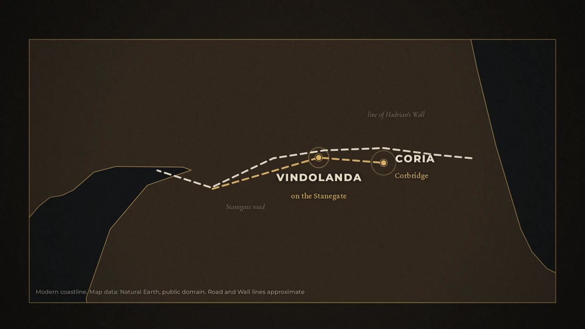
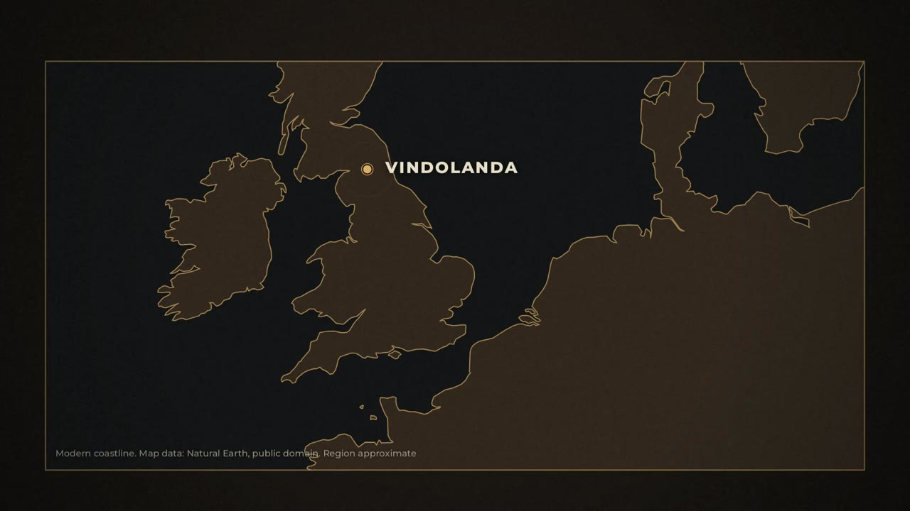
The textbook plan
So what was inside a fort? Here is the textbook plan. A stone wall or a turf rampart, two or more ditches, and usually four gates. Most forts, says English Heritage, are shaped like a playing card, with rounded corners. Inside: a headquarters building, a large house for the commander and his family, granaries, a workshop, and often a hospital. Around them, barracks. Many barracks. And the bath house normally lay outside the walls.
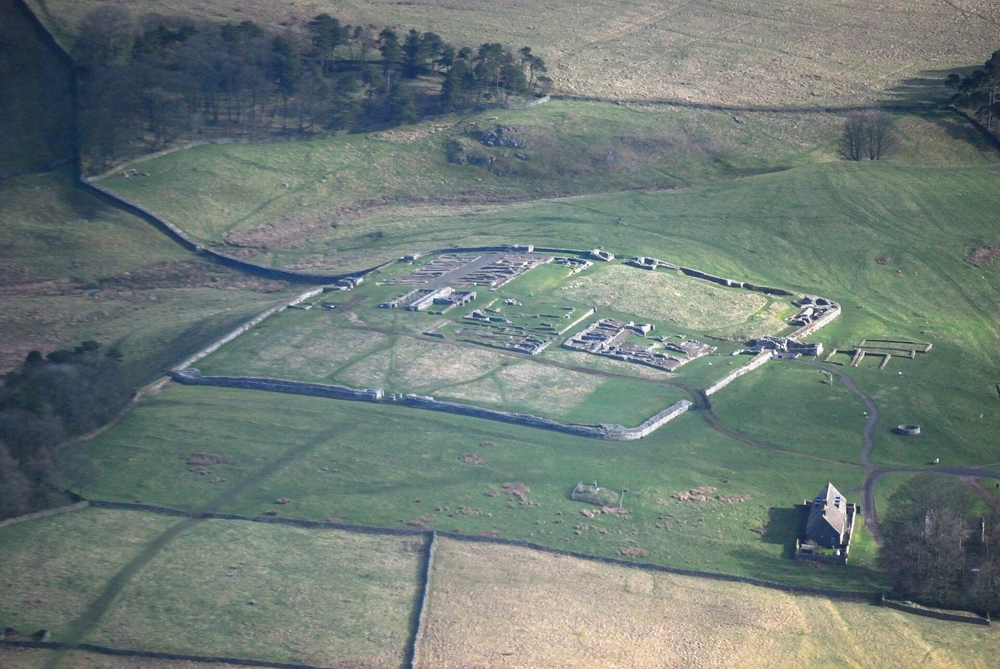
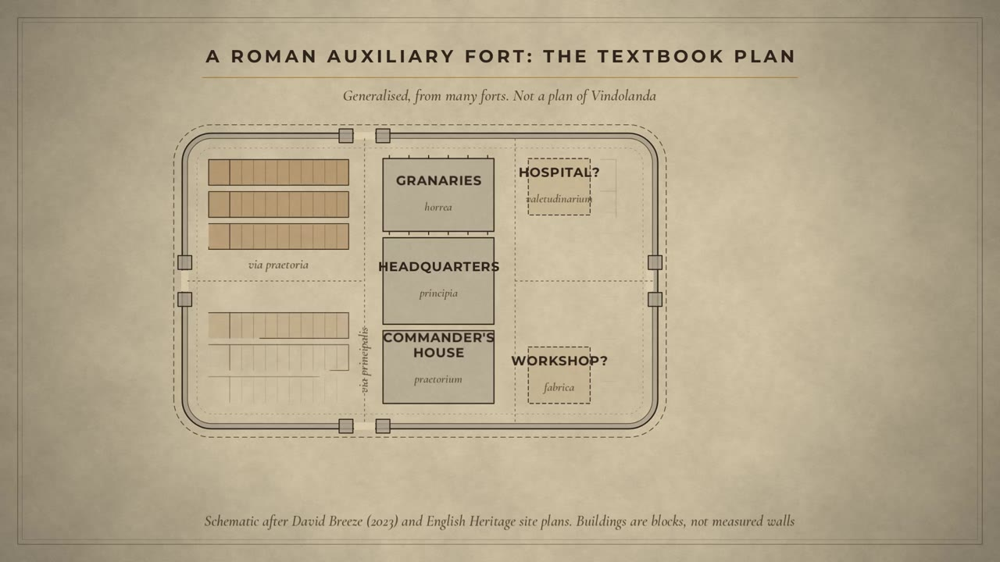
Inside the buildings
The headquarters held the unit's shrine. In it, says the archaeologist David Breeze, stood a statue of the emperor and the standards of the unit. At Vindolanda, you can still walk through a stone headquarters building, and past the granaries. An infantry barrack usually had ten rooms, with about eight men to a room. The centurion's apartment was at the end nearest the rampart. There was no dining hall. The soldiers probably ate their two meals a day in their barrack rooms. And some cavalry barracks housed the men and their horses under one roof.
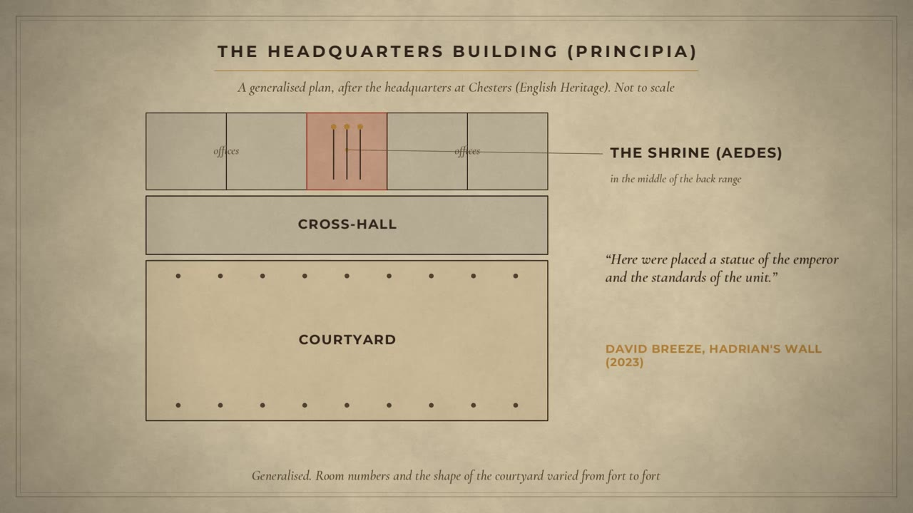
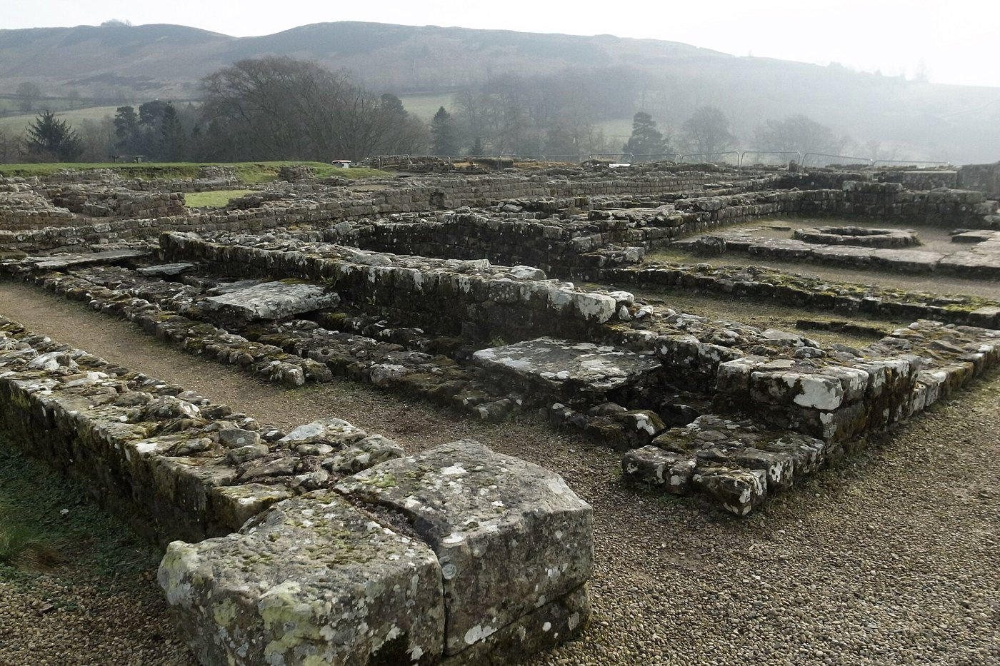
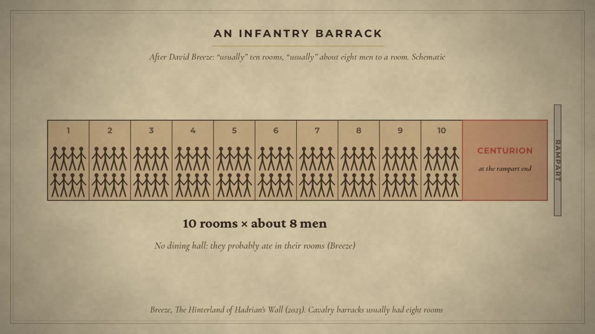
Did you know? Some cavalry barracks housed the men and their horses under one roof, says David Breeze.
What the Roman manual says
Where does this plan come from? Mostly from excavation. The ancient texts help less than you might think. There is a Roman manual on laying out a camp. It used to be credited to a surveyor called Hyginus, wrongly, says the scholar Sheppard Frere, and its date is disputed. Its rules are precise. A tent takes up ten feet and shelters eight men. The corners of the camp should be rounded. The front gate should always face the enemy. But it describes a summer camp for a whole field army. Not a fort like Vindolanda. And watch the words. In the camp texts, the praetorium is the general's tent. In a fort, archaeologists call the commander's house the praetorium, and the headquarters the principia. That isn't a modern habit. A stone from Birdoswald, on Hadrian's Wall, from around the year 297, uses those same Latin words for the commandant's house and the headquarters.
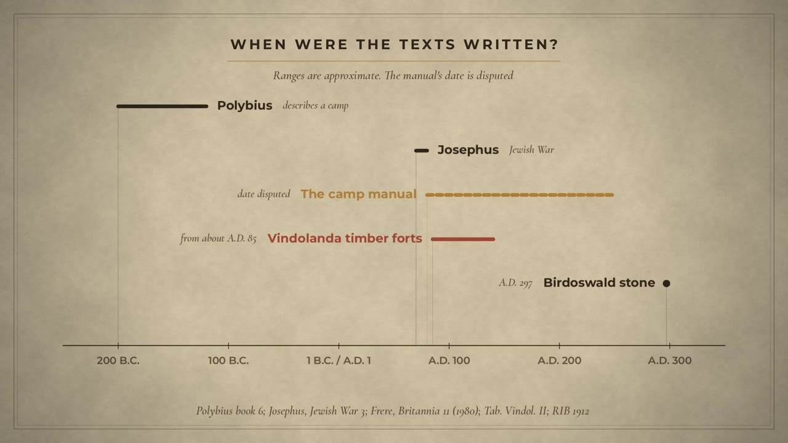
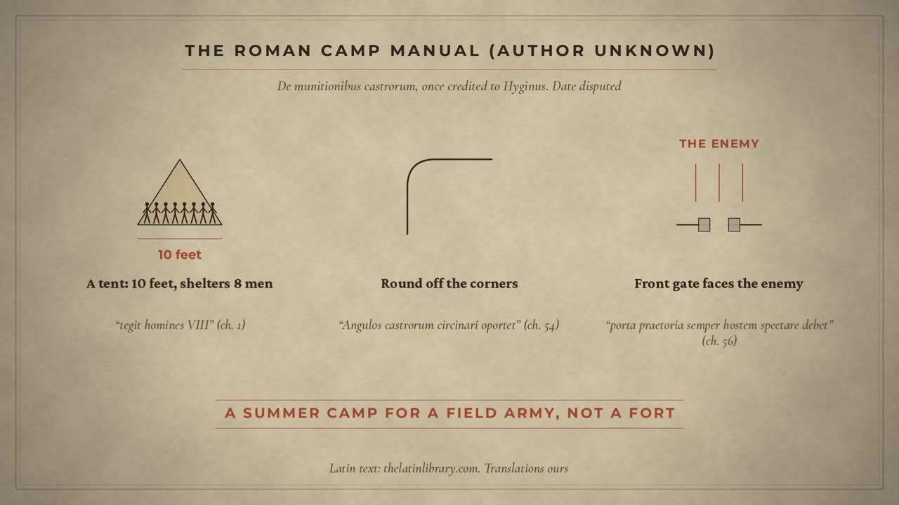
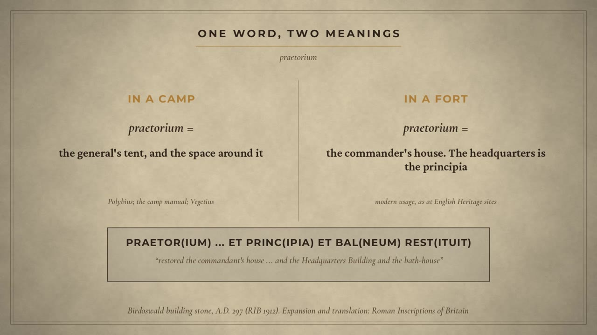
Forts on top of forts
At Vindolanda, though, there isn't one fort. There are many, one on top of another. The Vindolanda Trust says the fort was demolished and completely rebuilt no fewer than nine times. Other sources count the layers differently. First came timber forts, from about A.D. 85. Then stone forts: one from around A.D. 160, and another from around 212. In between, around the year 200, rows of round stone huts were built over the demolished stone fort. When the fort was rebuilt, clay was dumped over the old layers to seal them and level the ground. With the wet soil, that cut off the oxygen. No oxygen, no rot. So wood, leather and cloth survived, in places up to four metres below today's ground.
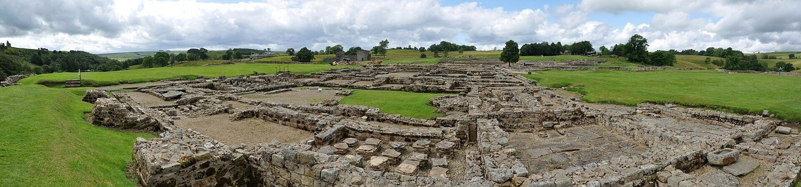
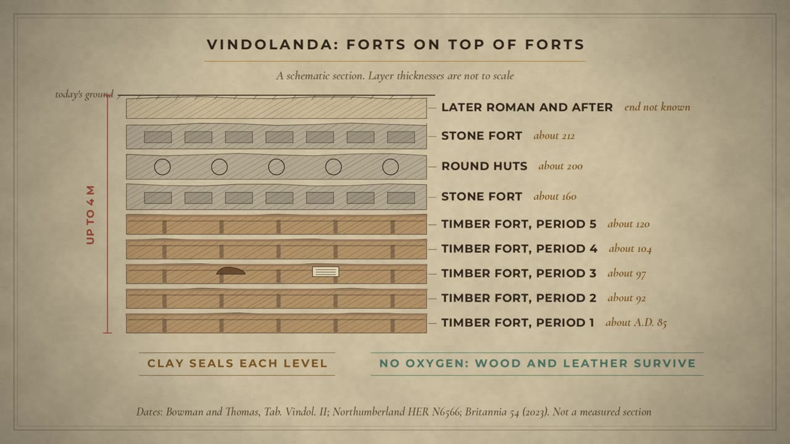
The writing tablets
That is how the tablets survived. Most are thin leaves of birch, alder or oak, usually less than a millimetre thick and about the size of a large postcard, written in ink. Others are stylus tablets: wooden panels filled with wax, with the letters scratched in. The Vindolanda Trust says about 1,600 ink tablets have been found here. Nearly 780 texts have been published.
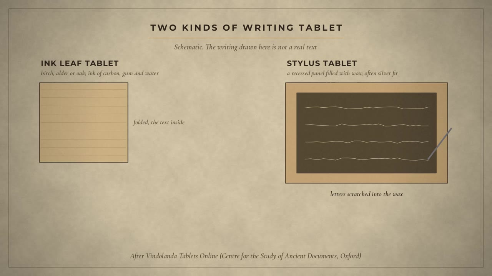
The strength report
One of them is a strength report. 18 May: the First Cohort of Tungrians, under the prefect Julius Verecundus. 752 men on the books, including 6 centurions. 456 are away. 337 are at Coria, today's Corbridge, about 17 miles away. 46 are guarding the governor. At the fort itself: 296. Of those, 15 are sick, 6 are wounded, and 10 are suffering from inflammation of the eyes. That leaves 265 fit for active service. So on that day, only about a third of the unit was at the fort and fit. The editors warn that the small numbers may be off by one or two.
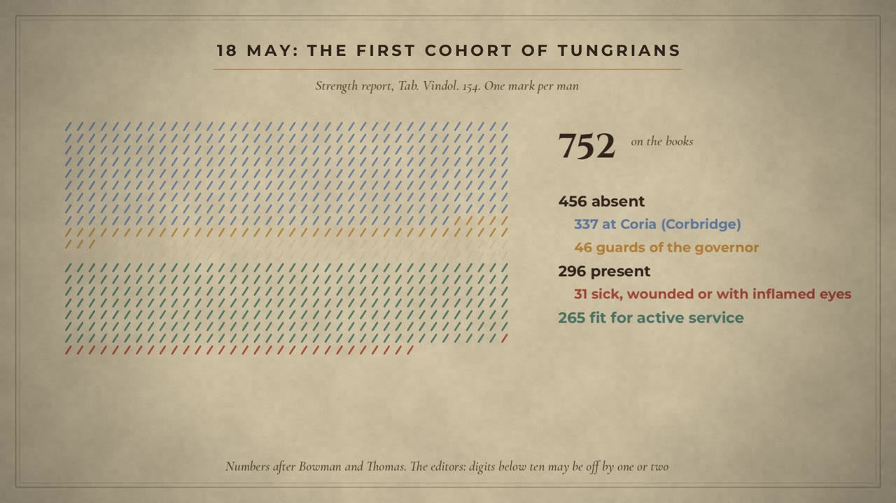
Did you know? On 18 May, of the 752 men on the books of the First Cohort of Tungrians, only 296 were at the fort, and 10 of those were suffering from inflammation of the eyes (Tab. Vindol. 154).
Work lists, and no beer
Another list records 343 men in the workshops on one April day. 12 are shoemakers. 18 are builders for the bath house. Others are down for lead, for the kilns, for clay, as plasterers, and, probably, as builders for the hospital. And then there is a note from Masclus, a cavalry officer, to his commander, Flavius Cerialis. He asks for orders for the next day. Then he adds: My fellow-soldiers have no beer. Please order some to be sent.
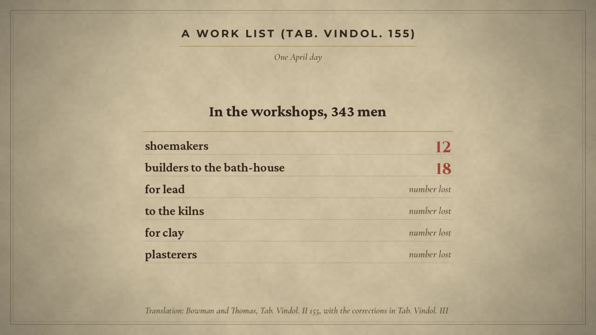
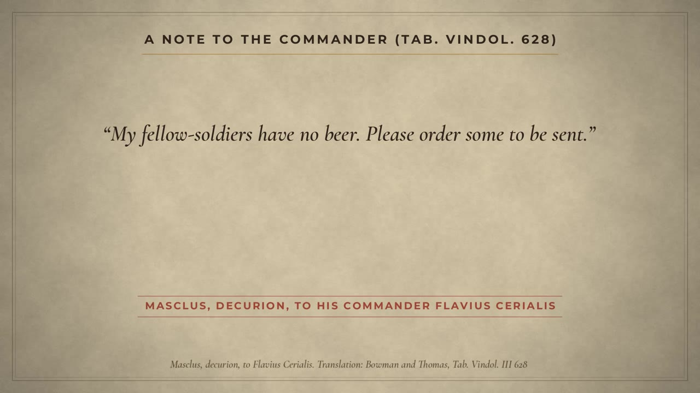
Did you know? A cavalry officer, Masclus, wrote in a note to his commander Flavius Cerialis: My fellow-soldiers have no beer. Please order some to be sent. (Tab. Vindol. III 628, translation Bowman and Thomas)
A birthday invitation
Flavius Cerialis commanded the Ninth Cohort of Batavians here around the year 100. His wife, Sulpicia Lepidina, lived with him. In 1985, excavators found a letter to her, from a woman called Claudia Severa. On 11 September, sister, for the day of the celebration of my birthday, I give you a warm invitation to make sure that you come to us. Most of the letter is in one hand. The last lines are in another: I shall expect you, sister. Farewell, sister, my dearest soul. The editors say it is quite certain that those lines are Severa's own. And almost certainly, they add, her lines in this and two other letters are the earliest known writing in Latin by a woman. Many tablets came from the commander's house and its yard, from a bonfire, presumably of old records when the unit moved out. The fire did not finish the job.
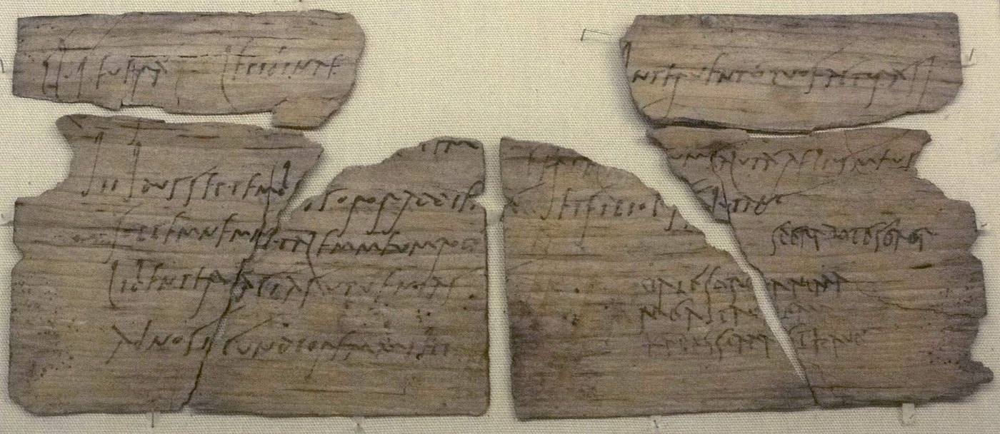
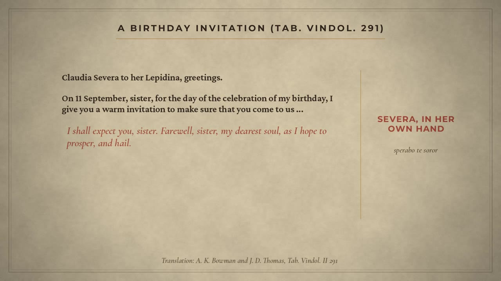
Families, and five thousand shoes
The commander was not the only one with a family here. The Vindolanda Trust has around 5,000 Roman shoes, and the archaeologist Elizabeth Greene has studied them. Shoes of women and children turned up in an infantry barrack block, and in the commander's house. In the commander's house, the shoes were elaborate and formal. In the barracks, they were simple. And the children's shoes, she suggested, matched the adults' shoes from the same part of the site. A reviewer of her book says those finds opened the way to accepting that families lived at the fort.
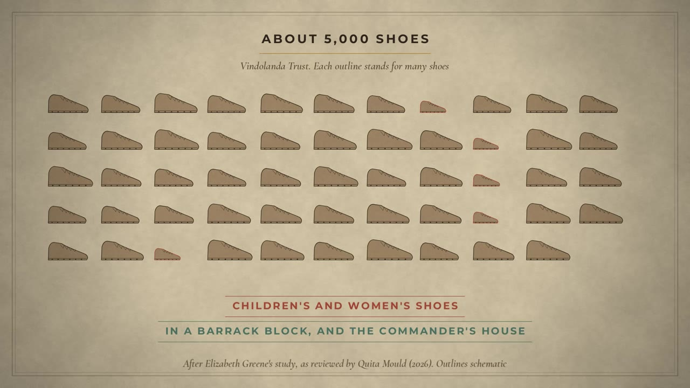
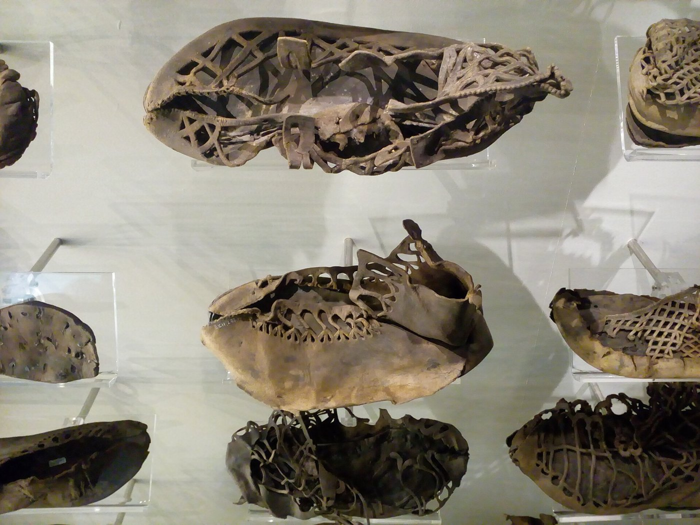
The Saalburg: a reconstruction
So what did a fort look like, standing up? At Vindolanda, we mostly have foundations. One famous answer stands in Germany: the Saalburg, on the Roman frontier in the Taunus hills. The German emperor, Wilhelm the Second, ordered it rebuilt in 1897. It went up on the ancient foundations over the next ten years. It is a reconstruction. The museum itself calls it an almost faithful impression of a Roman fort. Even before it was built, critics said the idea lacked any historical starting point. And the details are argued over. Andrew Selkirk, in Current World Archaeology, says the Kaiser wanted bare stone, while Roman walls were normally plastered and painted to look like cut stone. So the foundations are evidence. What stands on them is a careful guess.
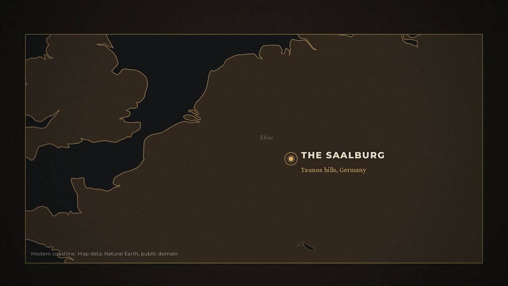
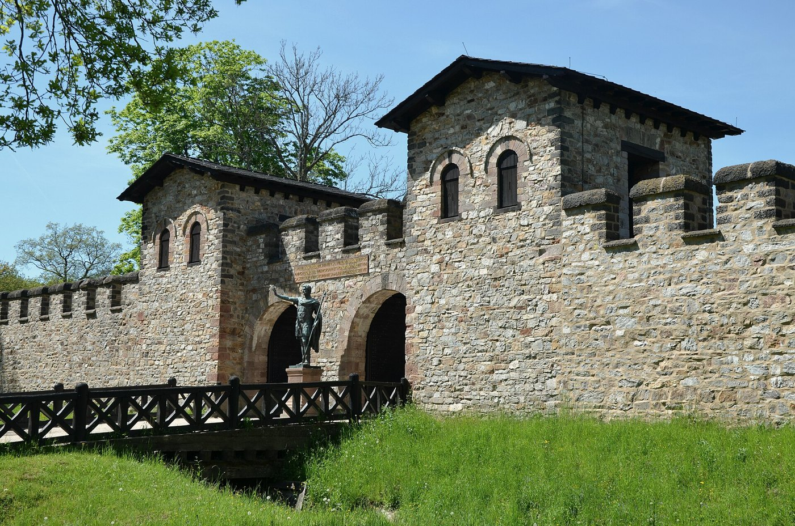
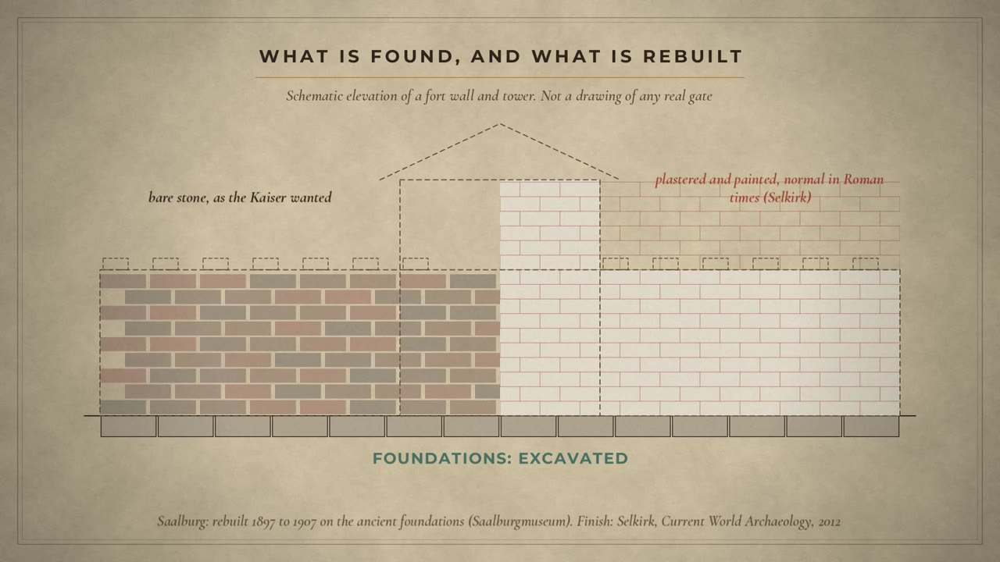
A guide, not a rule
And the textbook plan is a guide, not a rule. In 1911, James Curle, who dug the fort at Newstead in Scotland, wrote that the plans show considerable variety, though the same general scheme was used nearly everywhere. Hardknott, in the Lake District, is more of a square. And Vindolanda's forts did not stay the same. The first one was enlarged after only a few years. The stone fort you can see today covers just under 1.5 hectares.
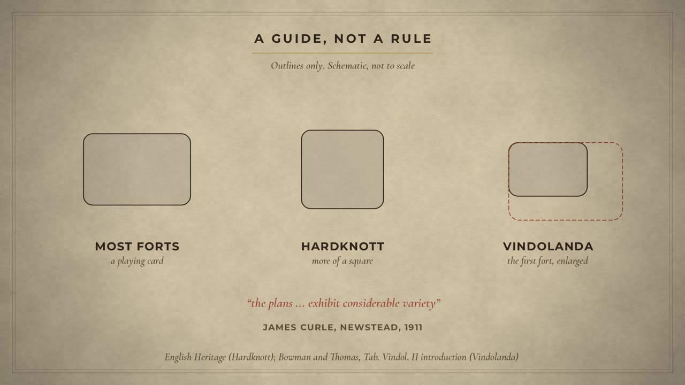
What we really have
So, what do we really have? A textbook plan that fits most forts in general, and few of them in every detail. At Vindolanda: fort upon fort, thousands of shoes, and the soldiers' own paperwork. A strength report, a work list, a request for beer, a birthday invitation. What we don't have: how tall the buildings were, what their roofs looked like, or an agreed count of how many forts stood here. We do not know.
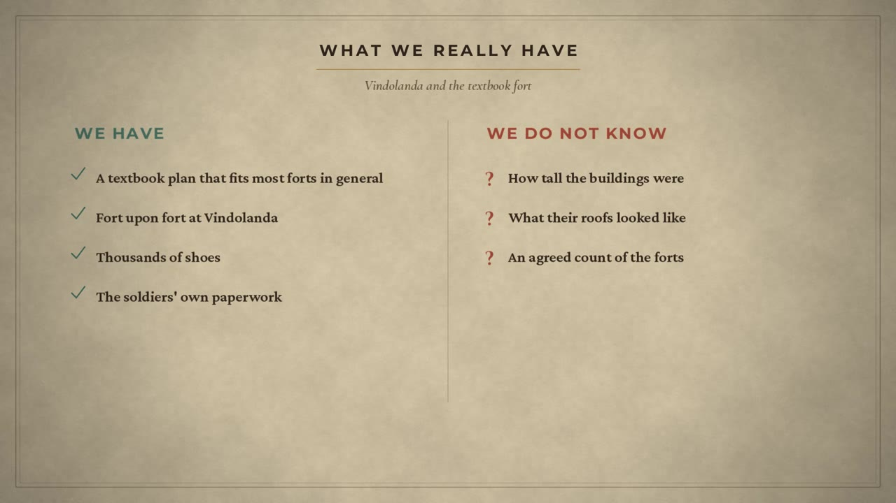
Verdict, and what comes next
So that's the Roman fort. On paper, a neat plan. In the ground at Vindolanda, a place where people counted the sick, built a bath house, ran out of beer, and planned a birthday.
Questions for you (I read every comment and I answer): Should a site like Vindolanda be rebuilt to full height, like the Saalburg, or left as foundations? The strength report, the beer letter, the birthday invitation or the shoes: which tells you most about life in a Roman fort?
Over to you
Should a site like Vindolanda be rebuilt to full height, like the Saalburg, or left as foundations? The strength report, the beer letter, the birthday invitation or the shoes: which tells you most about life in a Roman fort?
Prefer to watch? The video on YouTube covers the same story with the full animations. Jump to a part:
- 0:00 March 1973: the first tablet
- 1:11 Camp or fort?
- 1:46 Where is Vindolanda?
- 2:13 The textbook plan
- 2:47 Inside the buildings
- 3:23 What the Roman manual says
- 4:25 Forts on top of forts
- 5:19 The writing tablets
- 5:46 The strength report
- 6:36 Work lists, and no beer
- 7:10 A birthday invitation
- 8:12 Families, and five thousand shoes
- 8:47 The Saalburg: a reconstruction
- 9:41 A guide, not a rule
- 10:11 What we really have
- 10:41 Verdict, and what comes next
Quick answers
What was inside a Roman fort?
According to the archaeologist David Breeze: a headquarters building, a large house for the commander and his family, granaries, a workshop, often a hospital, and many barracks, inside a stone wall or turf rampart with two or more ditches and usually four gates. The bath house normally lay outside the walls.
Why are the Vindolanda tablets preserved?
When the fort was rebuilt, clay was dumped over the old layers to seal them and level the ground. With the wet soil, that cut off the oxygen, so wood, leather and cloth survived, in places up to four metres below today's ground.
What does the Vindolanda strength report say?
On 18 May the First Cohort of Tungrians had 752 men on the books. 456 were away, 337 of them at Coria, today's Corbridge. 296 were at the fort, and of those 15 were sick, 6 wounded and 10 suffering from inflammation of the eyes, leaving 265 fit. The editors warn that the small numbers may be off by one or two.
Is the Vindolanda birthday invitation written by a woman?
Most of the letter is in one hand. The last lines are in another, and the editors say it is quite certain that they are Claudia Severa's own. Almost certainly, they add, her lines in this and two other letters are the earliest known writing in Latin by a woman.
Is the Saalburg a real Roman fort?
It stands on the real foundations of a Roman fort, but what you see above them is a reconstruction, ordered by Wilhelm II in 1897 and built over the next ten years. The museum itself calls it an almost faithful impression of a Roman fort.
Where it happened
- Vindolanda (Chesterholm), Northumberland (A.D. 85): Roman forts from about A.D. 85; the writing tablets, first found in March 1973.
- Coria (Corbridge) (A.D. 95): 337 men of the First Cohort of Tungrians were at Coria on 18 May (Tab. Vindol. 154).
- Housesteads (A.D. 200): A playing-card fort on Hadrian's Wall, shown from the air.
- Birdoswald (A.D. 297): Building stone of A.D. 297 naming the praetorium and the principia (RIB 1912).
- Hardknott (A.D. 120): A fort that is more of a square than a playing card (English Heritage).
- Newstead (Trimontium) (A.D. 100): The fort dug by James Curle, who wrote in 1911 that fort plans show considerable variety.
- Saalburg, Taunus, Germany (A.D. 1907): A Roman fort rebuilt 1897 to 1907 on its ancient foundations: a modern reconstruction.
Sources
Ancient writers and modern work
All pages below were read on 2026-11-15. Verbatim excerpts and page details are in `research/tablets.md`, `research/site.md` and `research/layout.md`.
Tags used in `claims.md`: A ancient testimony, E excavated or museum evidence, M modern scholarship, D disputed (hedged in the narration), I our illustration or framing.
The Vindolanda writing tablets (edition)
- Tab. Vindol. I introduction (1983), the first find in March 1973 by Robin Birley, "two small thin fragments of wood which looked rather like oily plane shavings"; the writing "rapidly began to fade on exposure to the air"; some tablets show signs of burning: https://romaninscriptionsofbritain.org/tabvindol/vol-I/introduction/ch1-a
- Tab. Vindol. II introduction: the periods (Period 1 c. A.D. 85 to 92; the fort then enlarged; Period 3 c. A.D. 97 to 102/3; Period 4 from about 104 to 120; Period 5 c. 120 to 130): https://romaninscriptionsofbritain.org/tabvindol/vol-II/introduction
- Tab. Vindol. III introduction: many texts from the praetorium of Periods 2 and 3, occupied by Flavius Cerialis "with his family and household"; the bonfire in its yard, "presumably made to burn rubbish and out-of-date material when the unit moved": https://romaninscriptionsofbritain.org/tabvindol/vol-III/introduction
- No. 154, strength report of the First Cohort of Tungrians (752, 6 centurions, 456 absent, 337 at Coria, 46 guards of the governor, 296 present, 15 sick, 6 wounded, 10 with inflammation of the eyes, 265 fit; the editors' caveat on digits below ten): https://romaninscriptionsofbritain.org/inscriptions/TabVindol154
- No. 155, work list ("in the workshops, 343 men", shoemakers 12, builders to the bath-house 18, lead, kilns, clay, plasterers; Tab. Vindol. III corrects the date to 24 April and reads "probably" builders to the hospital): https://romaninscriptionsofbritain.org/inscriptions/TabVindol155 (checked again by the builder on 2026-11-15)
- No. 164, "Brittunculi" (read, not used in the narration): https://romaninscriptionsofbritain.org/inscriptions/TabVindol164
- No. 291, Claudia Severa's birthday invitation to Sulpicia Lepidina, found 1985; the editors: "It is quite certain that the author is Severa herself ... Almost certainly, therefore, these are the earliest known examples of writing in Latin by a woman" (covering 291 to 293): https://romaninscriptionsofbritain.org/inscriptions/TabVindol291
- No. 346, socks, sandals and underpants, the first tablet found (Tab. Vindol. I no. 38): https://romaninscriptionsofbritain.org/inscriptions/TabVindol346
- No. 628 (Tab. Vindol. III), Masclus, decurion, to Flavius Cerialis: "My fellow-soldiers have no beer. Please order some to be sent." (find date, period and Latin checked again by the builder): https://romaninscriptionsofbritain.org/inscriptions/TabVindol628
- RIB tablets home page: "nearly 780 texts" published.
The site
Shoes and families
Fort layout: ancient texts
Fort layout: modern scholarship
The Saalburg
Images (contemporary evidence)
Image credits
- Headquarters building, Vindolanda. Photo: Andrew Curtis, geograph.org.uk, CC BY-SA 2.0
- Vindolanda, panorama of the fort. Photo: John E Ryelea, CC BY-SA 4.0
- Vindolanda tablet 244. Photo: The Trustees of the British Museum, CC BY-SA 4.0
- Vindolanda fort. Photo: Carole Raddato, CC BY-SA 2.0
- Vindolanda tablets on show in the British Museum. Photo: Mike Peel, CC BY-SA 4.0
- Vindolanda tablet 291, the birthday invitation. British Museum. Photo: Fae, CC BY-SA 3.0
- Trajan's Column, Rome (A.D. 113): soldiers building a fort, scene XI. Plate from C. Cichorius, 1896 to 1900, public domain
- Trajan's Column, Rome (A.D. 113): soldiers building a fort, scene XVI. Plate from C. Cichorius, 1896 to 1900, public domain
- Vindolanda Roman fort. Photo: Steven Haslington, geograph.org.uk, CC BY-SA 2.0
- Housesteads Roman fort on Hadrian's Wall, from the air. Photo: Lieven Smits, CC BY-SA 4.0
- Military bath house at Vindolanda. Photo: Voice of Clam, public domain
- The headquarters building (principia) at Vindolanda. Photo: Mramoeba, CC BY-SA 4.0
- Granary and stores buildings at Vindolanda. Photo: Mramoeba, CC BY-SA 4.0
- Panoramic view of the ruins at Vindolanda. Photo: Nilfanion, CC BY-SA 3.0
- Vindolanda tablets on show in the British Museum. Photo: Mike Peel, CC BY-SA 4.0
- Vindolanda, a commander's house (praetorium) of a stone fort. Photo: Rob Farrow, geograph.org.uk, CC BY-SA 2.0
- Hypocaust (underfloor heating) in a commander's house at Vindolanda. Photo: Andrew Curtis, geograph.org.uk, CC BY-SA 2.0
- A Roman shoe from Vindolanda, Vindolanda museum. Photo: Colgill, CC BY-SA 4.0
- Roman shoes in the Vindolanda museum. Photo: Victuallers, CC BY 4.0
- A decorated Roman shoe in the Vindolanda museum. Photo: Victuallers, CC BY 4.0
- Vindolanda in May 2000. Photo: Ruth Riddle, geograph.org.uk, CC BY-SA 2.0
- Foundation stone of the Saalburg reconstruction, laid by Kaiser Wilhelm II, 11 October 1900. Photo: Kreuzschnabel, CC BY-SA 3.0
- RECONSTRUCTION, 1897 to 1907: the main gate of the Saalburg, Germany. Photo: Carole Raddato, CC BY-SA 2.0
- RECONSTRUCTION: the headquarters building of the Saalburg, Germany. Photo: Carole Raddato, CC BY-SA 2.0
- The rebuilt Saalburg gate with the Kaiser's inscription and a modern statue of Antoninus Pius. Photo: Carole Raddato, CC BY-SA 2.0
- Remains of a granary, Vindolanda. Photo: Andrew Curtis, geograph.org.uk, CC BY-SA 2.0
- RECONSTRUCTION: the main street and granary of the Saalburg, Germany. Photo: Reinhard Dietrich, CC BY-SA 4.0
- RECONSTRUCTION, 1897 to 1907: the main gate of the Saalburg, Germany. Photo: Heinrich Stuerzl, CC BY-SA 4.0
- Animations, maps and diagrams: original work, Spoken History. Map data: Natural Earth, public domain.
- Music: Brahms - Symphony No. 4 in E minor, Op. 98 - II. Andante moderato (Musopen Symphony): Johannes Brahms; released to the public domain by Musopen (PD-author on the Commons file page)
- Music: Kimiko Ishizaka - Bach - Well-Tempered Clavier, Book 1 - 31 Prelude No. 16 in G minor, BWV 861: Composed by Johann Sebastian Bach, performed by Kimiko Ishizaka; CC0 on the Commons file page
- Music: Handel - Suite Vol.1 No. 2 in F major HWV 427 - 1. Adagio: (See Musopen for author information); released to the public domain by Musopen (PD-author on the Commons file page)
- Music: Dvořák - String Quartet No. 12 in F major, Op. 96 'American' - II. Lento (Musopen String Quartet): Antonín Dvořák; released to the public domain by Musopen (PD-author on the Commons file page)
- Music: Gymnopedie No. 1.: Teknopazzo; CC0 on the Commons file page
Transcript
Read the full narration
The Roman Fort. Inside Vindolanda, layer by layer. Northern England. March 1973. In a deep trench, the archaeologist Robin Birley is handed two thin slivers of dark wood. He said later that they looked rather like oily plane shavings. They are prised apart. On the inside, there is writing. And as the air reaches it, the ink begins to fade. An infra-red photograph brought the words back. It was part of a letter. Pairs of socks. Two pairs of sandals. And two pairs of underpants. This is Vindolanda, a Roman fort just south of Hadrian's Wall. Those slivers were the first of the Vindolanda tablets: letters, lists and reports, written by people who lived here about 1,900 years ago. Today we're asking what a Roman fort was, what has been dug up here, and what the texts really say. Because the fort in the textbooks and the fort in the ground are not quite the same thing. First, a fort is not a camp. The Greek historian Polybius, writing in the second century B.C., describes a Roman army camp. It forms a square, he says, and its streets give it the appearance of a town. Josephus, in the first century A.D., says a Roman camp looked like a city built on the sudden, with workshops, and the general's tent in the middle, like a temple. Those were camps for an army on the move. A fort was a long-term base: at Vindolanda, first of timber, later of stone. Vindolanda lies on the Stanegate, a Roman road across the north of England, about 1.6 kilometres south of the line of Hadrian's Wall. The first fort here was built around A.D. 85, before the emperor Hadrian and his Wall. Its soldiers came from far away. The tablets name the First Cohort of Tungrians and the Ninth Cohort of Batavians, both first raised in what is now Belgium and the southern Netherlands. So what was inside a fort? Here is the textbook plan. A stone wall or a turf rampart, two or more ditches, and usually four gates. Most forts, says English Heritage, are shaped like a playing card, with rounded corners. Inside: a headquarters building, a large house for the commander and his family, granaries, a workshop, and often a hospital. Around them, barracks. Many barracks. And the bath house normally lay outside the walls. The headquarters held the unit's shrine. In it, says the archaeologist David Breeze, stood a statue of the emperor and the standards of the unit. At Vindolanda, you can still walk through a stone headquarters building, and past the granaries. An infantry barrack usually had ten rooms, with about eight men to a room. The centurion's apartment was at the end nearest the rampart. There was no dining hall. The soldiers probably ate their two meals a day in their barrack rooms. And some cavalry barracks housed the men and their horses under one roof. Where does this plan come from? Mostly from excavation. The ancient texts help less than you might think. There is a Roman manual on laying out a camp. It used to be credited to a surveyor called Hyginus, wrongly, says the scholar Sheppard Frere, and its date is disputed. Its rules are precise. A tent takes up ten feet and shelters eight men. The corners of the camp should be rounded. The front gate should always face the enemy. But it describes a summer camp for a whole field army. Not a fort like Vindolanda. And watch the words. In the camp texts, the praetorium is the general's tent. In a fort, archaeologists call the commander's house the praetorium, and the headquarters the principia. That isn't a modern habit. A stone from Birdoswald, on Hadrian's Wall, from around the year 297, uses those same Latin words for the commandant's house and the headquarters. At Vindolanda, though, there isn't one fort. There are many, one on top of another. The Vindolanda Trust says the fort was demolished and completely rebuilt no fewer than nine times. Other sources count the layers differently. First came timber forts, from about A.D. 85. Then stone forts: one from around A.D. 160, and another from around 212. In between, around the year 200, rows of round stone huts were built over the demolished stone fort. When the fort was rebuilt, clay was dumped over the old layers to seal them and level the ground. With the wet soil, that cut off the oxygen. No oxygen, no rot. So wood, leather and cloth survived, in places up to four metres below today's ground. That is how the tablets survived. Most are thin leaves of birch, alder or oak, usually less than a millimetre thick and about the size of a large postcard, written in ink. Others are stylus tablets: wooden panels filled with wax, with the letters scratched in. The Vindolanda Trust says about 1,600 ink tablets have been found here. Nearly 780 texts have been published. One of them is a strength report. 18 May: the First Cohort of Tungrians, under the prefect Julius Verecundus. 752 men on the books, including 6 centurions. 456 are away. 337 are at Coria, today's Corbridge, about 17 miles away. 46 are guarding the governor. At the fort itself: 296. Of those, 15 are sick, 6 are wounded, and 10 are suffering from inflammation of the eyes. That leaves 265 fit for active service. So on that day, only about a third of the unit was at the fort and fit. The editors warn that the small numbers may be off by one or two. Another list records 343 men in the workshops on one April day. 12 are shoemakers. 18 are builders for the bath house. Others are down for lead, for the kilns, for clay, as plasterers, and, probably, as builders for the hospital. And then there is a note from Masclus, a cavalry officer, to his commander, Flavius Cerialis. He asks for orders for the next day. Then he adds: My fellow-soldiers have no beer. Please order some to be sent. Flavius Cerialis commanded the Ninth Cohort of Batavians here around the year 100. His wife, Sulpicia Lepidina, lived with him. In 1985, excavators found a letter to her, from a woman called Claudia Severa. On 11 September, sister, for the day of the celebration of my birthday, I give you a warm invitation to make sure that you come to us. Most of the letter is in one hand. The last lines are in another: I shall expect you, sister. Farewell, sister, my dearest soul. The editors say it is quite certain that those lines are Severa's own. And almost certainly, they add, her lines in this and two other letters are the earliest known writing in Latin by a woman. Many tablets came from the commander's house and its yard, from a bonfire, presumably of old records when the unit moved out. The fire did not finish the job. If you are enjoying this type of content, please don't forget to subscribe. The commander was not the only one with a family here. The Vindolanda Trust has around 5,000 Roman shoes, and the archaeologist Elizabeth Greene has studied them. Shoes of women and children turned up in an infantry barrack block, and in the commander's house. In the commander's house, the shoes were elaborate and formal. In the barracks, they were simple. And the children's shoes, she suggested, matched the adults' shoes from the same part of the site. A reviewer of her book says those finds opened the way to accepting that families lived at the fort. So what did a fort look like, standing up? At Vindolanda, we mostly have foundations. One famous answer stands in Germany: the Saalburg, on the Roman frontier in the Taunus hills. The German emperor, Wilhelm the Second, ordered it rebuilt in 1897. It went up on the ancient foundations over the next ten years. It is a reconstruction. The museum itself calls it an almost faithful impression of a Roman fort. Even before it was built, critics said the idea lacked any historical starting point. And the details are argued over. Andrew Selkirk, in Current World Archaeology, says the Kaiser wanted bare stone, while Roman walls were normally plastered and painted to look like cut stone. So the foundations are evidence. What stands on them is a careful guess. And the textbook plan is a guide, not a rule. In 1911, James Curle, who dug the fort at Newstead in Scotland, wrote that the plans show considerable variety, though the same general scheme was used nearly everywhere. Hardknott, in the Lake District, is more of a square. And Vindolanda's forts did not stay the same. The first one was enlarged after only a few years. The stone fort you can see today covers just under 1.5 hectares. So, what do we really have? A textbook plan that fits most forts in general, and few of them in every detail. At Vindolanda: fort upon fort, thousands of shoes, and the soldiers' own paperwork. A strength report, a work list, a request for beer, a birthday invitation. What we don't have: how tall the buildings were, what their roofs looked like, or an agreed count of how many forts stood here. We do not know. So that's the Roman fort. On paper, a neat plan. In the ground at Vindolanda, a place where people counted the sick, built a bath house, ran out of beer, and planned a birthday. Three questions for you. Should a site like this be rebuilt to full height, like the Saalburg, or left as foundations? Of the strength report, the beer letter, the birthday invitation and the shoes, which tells you most about life in a fort? If you enjoy history that checks its sources, a like and a subscribe help me keep making it. And write me a comment with your answers. I read every one, and I answer. Thanks for watching, and I'll see you in the next one. It's on your screen right now. Tap it, and I'll see you there.
All 21 topics
More episodes

The Roman Scorpion: Rome's Sniper Weapon
A Gaulish warrior on a burning wall is hit by a bolt from a machine he never saw. The Roman scorpion was a torsion bolt-shooter powered by twisted sinew and hair. How it worked, who built...
Read the story
The Roman Onager: Rome's One-Armed Stone-Thrower
A one-armed Roman stone-thrower, named after a wild ass, shook Persian siege towers apart at Amida in A.D. 359. How it worked, how it was crewed and carried, what it really did, and what...
Read the story
What Is a Caltrop?
A few centimetres of iron with four spikes, so shaped that one point always stands up. What the Romans called it, the story of buried caltrops at Gaugamela that only Curtius tells, Vegetius...
Read the story
What Was a Pugio?
A coin struck by Caesar's killers shows two daggers. The pugio, Rome's short dagger, appears in the stories of Caesar, Scaevinus, Arria and Sertorius, none of them a battle. What museums...
Read the story
What Was the Gladius, Really? Rome's Sword
Livy says Philip V's soldiers were horrified by the wounds of the Spanish sword. What was the Roman gladius, really? The origin story in the Suda and the dispute over when and from whom...
Read the story
Lorica Segmentata: The Armour from Corbridge
In 1964 a training dig at Corbridge, close to Hadrian's Wall, found a chest buried under a floor with twelve unmatched sections of Roman plate armour. What the lorica segmentata was, why...
Read the story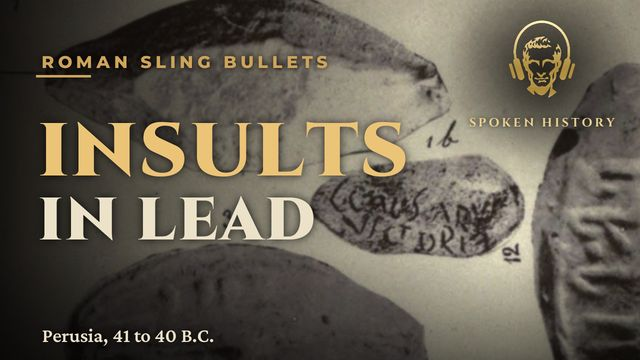
Roman Bullets: Insults Cast in Lead
Roman lead sling bullets, the glandes: how they were cast, what the inscribed bullets from Octavian's siege of Perusia (41 to 40 B.C.) say, the disputed story of three hundred sacrificed at...
Read the story
Roman Helmets: From Montefortino to Imperial Gallic
Caesar writes that at the Sabis in 57 B.C. his men had no time even to put on their helmets. What were Roman helmets really? The modern type names (Montefortino, Coolus, Hagenau, Weisenau...
Read the story
The Roman Shield
What was the Roman scutum made of? Polybius describes a double layer of boards glued with bull-hide glue, linen, calfskin, iron edging and an iron boss; the shield from Tower 19 at...
Read the story